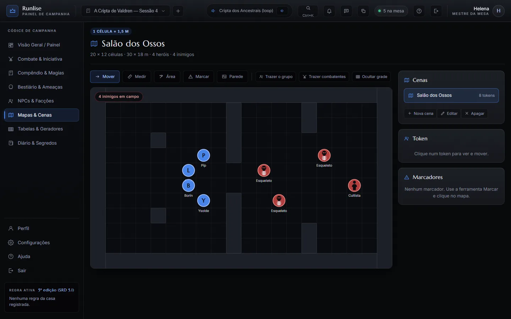
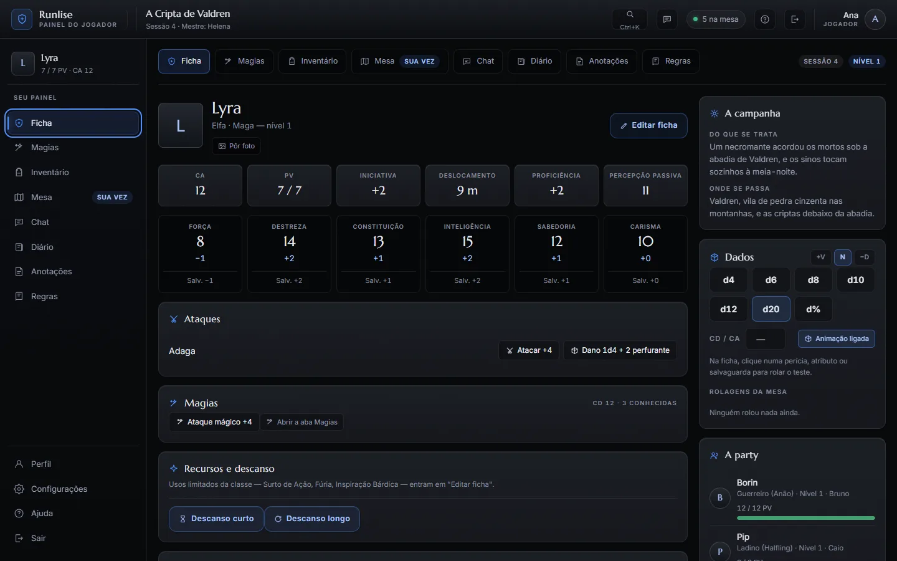
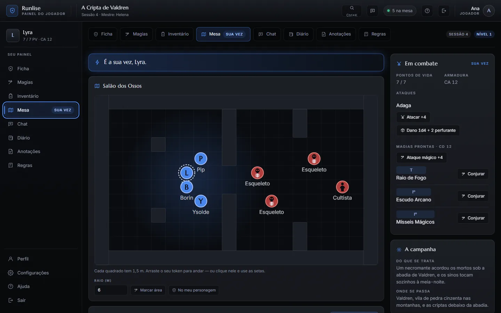

Para o Mestre
Tudo o que você prepara antes da sessão e usa durante ela, num painel só.
- Mapas com tokens e paredes
- Combate com iniciativa e pontos de vida
- Bestiário e compêndio de regras
- Diário, NPCs e tabelas da campanha

Mesa virtual para RPG de 5ª edição
O Mestre controla o mundo, cada jogador controla o seu personagem, e tudo acontece ao mesmo tempo, na tela de todos. Sem instalar nada.
Beta fechado e gratuito. Jogadores não precisam de conta.
Jogar online não devia dar mais trabalho que a própria aventura. Sem planilha, sem dez abas abertas: o grupo abre um link e a sessão começa.
Tudo o que você prepara antes da sessão e usa durante ela, num painel só.

O seu personagem inteiro na mão, no computador ou no celular.

O que acontece na mesa aparece para o grupo na hora.

Com a conta de Mestre, dê um nome à campanha e prepare o primeiro mapa.
Um código de 12 caracteres, ou o link de convite, pelo WhatsApp ou pelo Discord.
Cada jogador entra com o código e o próprio nome. Sem cadastro, sem instalar nada.
Toda aventura começa com um teste. Clique no d20.
A Runlise está abrindo aos poucos, para cada grupo ter uma boa primeira sessão. Peça o seu convite de Mestre: é grátis.
Pedir convite de MestreAbre um formulário do Google numa aba nova. Os convites são enviados pelo contato que você deixar.